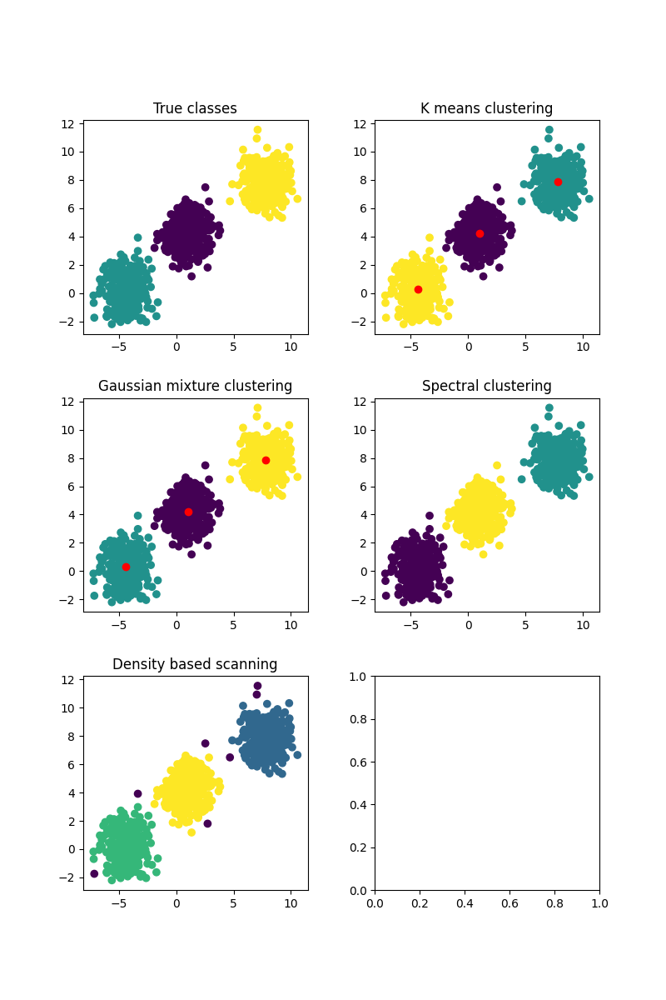
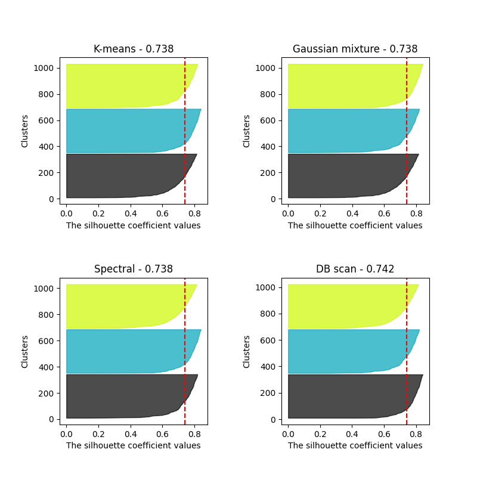

Note
Go to the end to download the full example code.
Comparison of clustering algorithms using silhouette scores
This script evaluates and visualizes various clustering algorithms on synthetic datasets. For each algorithm, a silhouette plot is produced, which is used for comparison of the algorithms. If one wants to experiment with differently shaped datasets, one should run the script locally and experiment with changing the “dataset” parameter.
- 
- 
import torch
import matplotlib.pyplot as plt
import matplotlib.cm as cm
from sklearn.datasets import make_blobs, make_classification, make_moons
import numpy as np
from DLL.MachineLearning.UnsupervisedLearning.Clustering import KMeansClustering, GaussianMixture, SpectralClustering, DBScan
from DLL.MachineLearning.SupervisedLearning.Kernels import RBF
from DLL.Data.Metrics import silhouette_score
n_samples=1000
dataset = "basic"
if dataset == "basic": X, y = make_blobs(n_samples=n_samples, n_features=2, cluster_std=1, centers=3, random_state=3)
if dataset == "narrow": X, y = make_classification(n_samples=n_samples, n_features=2, n_informative=2, n_redundant=0, n_clusters_per_class=1, n_classes=3, random_state=1)
if dataset == "moons": X, y = make_moons(n_samples=n_samples, noise=0.05, random_state=0)
X = torch.from_numpy(X)
y = torch.from_numpy(y)
fig, ax = plt.subplots(3, 2, figsize=(8, 12))
plt.subplots_adjust(hspace=0.3, wspace=0.3)
ax = ax.ravel()
ax[0].scatter(X[:, 0], X[:, 1], c=y)
ax[0].set_title("True classes")
if dataset in ["basic", "narrow"]:
n_classes = 3
elif dataset in ["moons"]:
n_classes = 2
model = KMeansClustering(k=n_classes, init="kmeans++", n_init=10, max_iters=100)
model.fit(X)
k_mean_labels = model.predict(X)
ax[1].scatter(X[:, 0], X[:, 1], c=k_mean_labels)
ax[1].scatter(model.centroids[:, 0], model.centroids[:, 1], c="red")
ax[1].set_title("K means clustering")
k_means_silhouette_samples = silhouette_score(X, k_mean_labels, return_samples=True)
torch.manual_seed(1)
model = GaussianMixture(k=n_classes, max_iters=100)
model.fit(X, verbose=False)
gaussian_mixture_labels = model.predict(X)
ax[2].scatter(X[:, 0], X[:, 1], c=gaussian_mixture_labels)
ax[2].scatter(model.mus[:, 0], model.mus[:, 1], c="red")
ax[2].set_title("Gaussian mixture clustering")
gaussian_mixture_silhouette_Sampels = silhouette_score(X, gaussian_mixture_labels, return_samples=True)
if dataset in ["basic"]:
correlation_length = 1
elif dataset in ["moons", "narrow"]:
correlation_length = 0.1
model = SpectralClustering(k=n_classes, kernel=RBF(correlation_length=correlation_length), use_kmeans=True)
model.fit(X)
spectral_labels = model.predict()
ax[3].scatter(X[:, 0], X[:, 1], c=spectral_labels)
ax[3].set_title("Spectral clustering")
spectral_silhouette_samples = silhouette_score(X, spectral_labels, return_samples=True)
if dataset in ["basic"]:
eps = 0.9
elif dataset in ["narrow"]:
eps = 0.5
elif dataset in ["moons"]:
eps = 0.1
model = DBScan(eps=eps, min_samples=5)
model.fit(X)
dbscan_labels = model.predict()
ax[4].scatter(X[:, 0], X[:, 1], c=dbscan_labels)
ax[4].set_title("Density based scanning")
dbscan_samples = silhouette_score(X[dbscan_labels != -1], dbscan_labels[dbscan_labels != -1], return_samples=True)
fig, ax = plt.subplots(2, 2, figsize=(8, 8))
plt.subplots_adjust(hspace=0.5, wspace=0.5)
ax = ax.ravel()
y_lower_k_means = 10
y_lower_gaussian_mixture = 10
y_lower_spectral = 10
for i in range(n_classes):
ith_cluster_k_means_silhouette_values = k_means_silhouette_samples[k_mean_labels == i]
ith_cluster_gaussian_mixture_silhouette_values = gaussian_mixture_silhouette_Sampels[gaussian_mixture_labels == i]
ith_cluster_spectral_silhouette_values = spectral_silhouette_samples[spectral_labels == i]
ith_cluster_k_means_silhouette_values, _ = ith_cluster_k_means_silhouette_values.sort()
ith_cluster_gaussian_mixture_silhouette_values, _ = ith_cluster_gaussian_mixture_silhouette_values.sort()
ith_cluster_spectral_silhouette_values, _ = ith_cluster_spectral_silhouette_values.sort()
size_cluster_i = ith_cluster_k_means_silhouette_values.shape[0]
y_upper = y_lower_k_means + size_cluster_i
color = cm.nipy_spectral(float(i) / n_classes)
ax[0].fill_betweenx(np.arange(y_lower_k_means, y_upper), 0, ith_cluster_k_means_silhouette_values, facecolor=color, edgecolor=color, alpha=0.7,)
y_lower_k_means = y_upper + 10
size_cluster_i = ith_cluster_gaussian_mixture_silhouette_values.shape[0]
y_upper = y_lower_gaussian_mixture + size_cluster_i
color = cm.nipy_spectral(float(i) / n_classes)
ax[1].fill_betweenx(np.arange(y_lower_gaussian_mixture, y_upper), 0, ith_cluster_gaussian_mixture_silhouette_values, facecolor=color, edgecolor=color, alpha=0.7,)
y_lower_gaussian_mixture = y_upper + 10
size_cluster_i = ith_cluster_spectral_silhouette_values.shape[0]
y_upper = y_lower_spectral + size_cluster_i
color = cm.nipy_spectral(float(i) / n_classes)
ax[2].fill_betweenx(np.arange(y_lower_spectral, y_upper), 0, ith_cluster_spectral_silhouette_values, facecolor=color, edgecolor=color, alpha=0.7,)
y_lower_spectral = y_upper + 10
y_lower_dbscan = 10
for i in torch.unique(dbscan_labels):
if i == -1:
continue
ith_cluster_dbscan_silhouette_values = dbscan_samples[dbscan_labels[dbscan_labels != -1] == i]
ith_cluster_dbscan_silhouette_values, _ = ith_cluster_dbscan_silhouette_values.sort()
size_cluster_i = ith_cluster_dbscan_silhouette_values.shape[0]
y_upper = y_lower_dbscan + size_cluster_i
color = cm.nipy_spectral(float(i) / n_classes)
ax[3].fill_betweenx(np.arange(y_lower_dbscan, y_upper), 0, ith_cluster_dbscan_silhouette_values, facecolor=color, edgecolor=color, alpha=0.7,)
y_lower_dbscan = y_upper + 10
ax[0].axvline(x=silhouette_score(X, k_mean_labels), color="red", linestyle="--")
ax[1].axvline(x=silhouette_score(X, gaussian_mixture_labels), color="red", linestyle="--")
ax[2].axvline(x=silhouette_score(X, spectral_labels), color="red", linestyle="--")
ax[3].axvline(x=silhouette_score(X[dbscan_labels != -1], dbscan_labels[dbscan_labels != -1]), color="red", linestyle="--")
ax[0].set_xlabel("The silhouette coefficient values")
ax[1].set_xlabel("The silhouette coefficient values")
ax[2].set_xlabel("The silhouette coefficient values")
ax[3].set_xlabel("The silhouette coefficient values")
ax[0].set_ylabel("Clusters")
ax[1].set_ylabel("Clusters")
ax[2].set_ylabel("Clusters")
ax[3].set_ylabel("Clusters")
ax[0].set_title(f"K-means - {round(silhouette_score(X, k_mean_labels), 3)}")
ax[1].set_title(f"Gaussian mixture - {round(silhouette_score(X, gaussian_mixture_labels), 3)}")
ax[2].set_title(f"Spectral - {round(silhouette_score(X, spectral_labels), 3)}")
ax[3].set_title(f"DB scan - {round(silhouette_score(X[dbscan_labels != -1], dbscan_labels[dbscan_labels != -1]), 3)}")
plt.show()
Total running time of the script: (0 minutes 4.705 seconds)